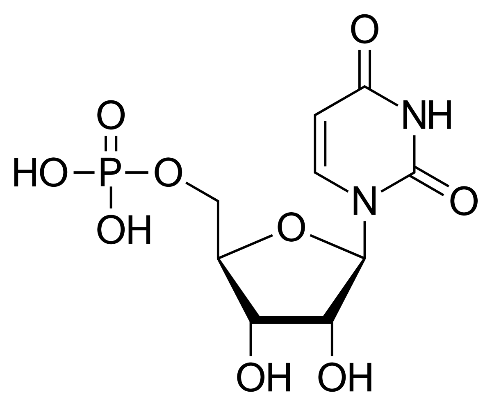
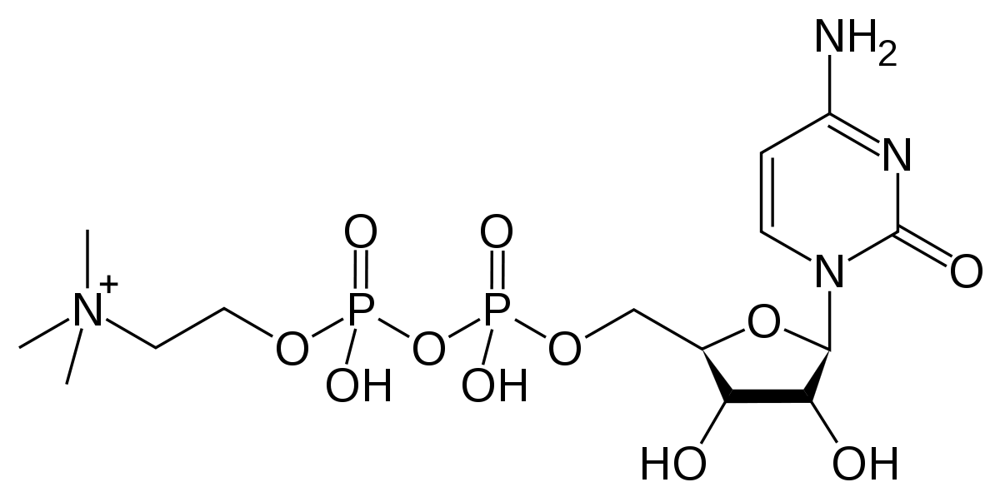
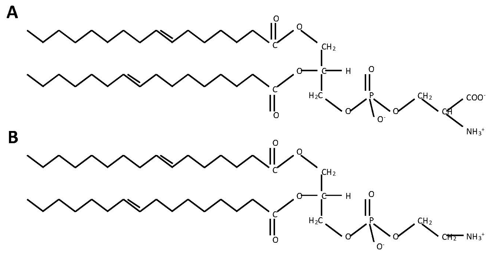
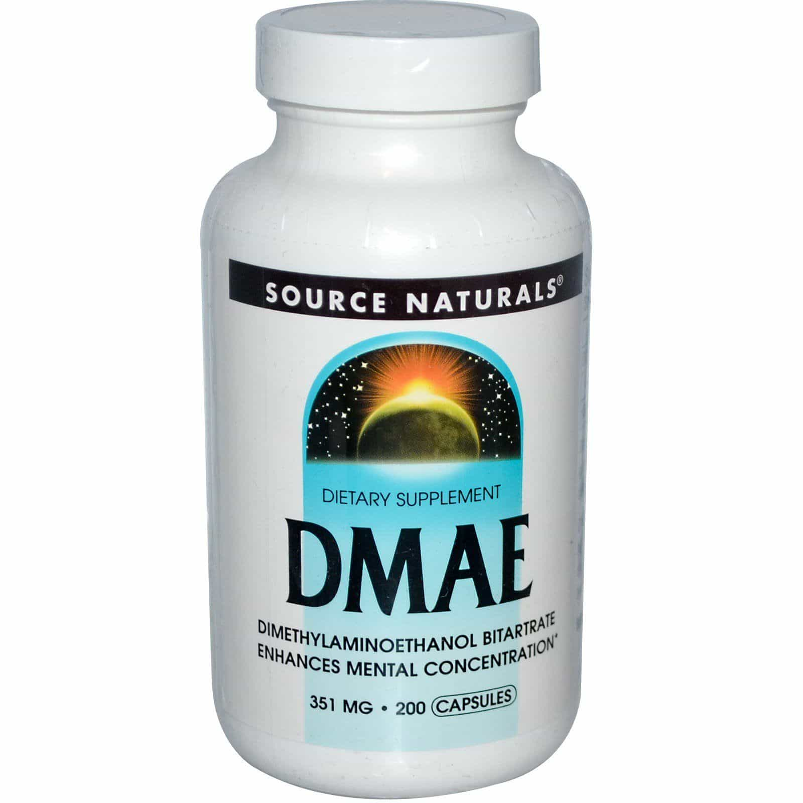

Sponsored Article is ROK's official account that publishes sponsored articles from advertisers. If you are interested hiring a sponsored article for your site, product, or service, visit our advertising page.


The following article is sponsored by Synapse Supplements.
As a man who is out to succeed, you need to be on your A-game at all times. Keeping your body and mind in top condition is mandatory for whatever you’re looking to do, whether you want to excel at work, impress a girl on a date, or perform in the gym. Unfortunately, many modern foods and drinks are full of substances that muddle your thinking and make you logy and tired.
To get the edge you need to succeed every day, you need nootropics, special substances that boost your brain function by giving you more energy, a better memory, and other positive effects. Here are seven nootropic substances that you can use to give your brain a boost when you need it the most.

One major problem when doing mind-intensive work is keeping your eye on the ball and avoiding distractions. Uridine monophosphate is a nootropic that can lengthen your attention span, allowing you to focus for longer periods of time and get more work done.
Not only that, uridine monophosphate can also improve your mood, smoothing over depression and making you more calm and collected. Scientific studies have also shown that uridine monophosphate increases neuroplasticity, making it a good substance to take when you’re studying something new.

CDP choline is a nootropic that aids memory and brain function by increasing the density of your brain’s acetylcholine receptors, improving their performance and making them more efficient. Acetylcholine is a major neurotransmitter responsible for pain response and a number of other brain functions, and denser receptors allow for a more efficient nervous system.

Phosphatidylserine is a vital component of cell membranes, playing a role in coagulation (the clotting of cuts) and other important cell functions. As a nootropic, phosphatidylserine binds to neurotransmitters in the brain, allowing them to more easily absorb glucose, which improves overall brain function.

DMAE (dimethylaminoethanol) is a nootropic that has been shown to increase attention span and concentration, making it possible to focus on tasks for a longer period of time and get more work done. Not only that, DMAE has been shown to have strong neuroprotective qualities, slowing down the aging and deterioration of brain cells. It’s because of this that DMAE has increasingly been used to treat sufferers of Alzheimer’s and other degenerative brain disorders.
Bacopa monnieri is a nootropic that improves both spatial and working memory, making it easier for you to recall and absorb information. This makes it an exceptionally useful nootropic for those who need to study for a test or absorb information in a learning setting. Not only that, bacopa monnieri has been shown to lower stress due to providing increases in adaptogenic stress inhibition, calming you down and making you more relaxed and less anxious.
Ginkgo biloba is a versatile nootropic that greatly enhances short- and long-term memory recall. In addition to this, it is also capable of greatly improving blood circulation in the brain, improving your brain health and lowering the risk of a stroke. Finally, ginkgo biloba has been shown to increase concentration.

Finally, lion’s mane is an extremely helpful nootropic because it speeds the creation of nerves and neurotransmitters in the brain. This not only improves brain function across the board, but reduces the likelihood of developing dementia and other degenerative brain disorders.
While all of these ingredients are effective ways to improve your brain function, chasing them down and taking them individually can be both a hassle and expensive. What if there was a way for you to gain access to them in a single product?
This is where Synapse Supplements’ gBoost comes in. gBoost is a nootropic product that contains each of these seven ingredients, balanced to provide a cognitive boost to anyone who needs it. Instead of having to fiddle with seven different types of products—some of which may have questionable additives or low-quality ingredients—you can take one supplement each day.
Each of the ingredients in gBoost has been shown to enhance brain function on their own, and combining them amplifies their effects to make you into a powerhouse of mental acuity. For writers, programmers, or anyone else who engages in cognitively demanding work, gBoost will enhance your memory, concentration, and attention span, enabling you to get more done in less time. gBoost also boosts verbal acuity, making it a good choice for anyone who needs to give a public speech or impress a girl on a date. Use coupon code “ROK” to get 10% off your order today.
Given the fast-paced nature of modern life, you need the gBoost edge in order to successfully compete. Staying in physical shape and cultivating an interesting life are vital for any man’s success, and nootropics such as the ones listed above are vital when it comes to accomplishing your goals. Whether you need to succeed at your job or in social situations, nootropics provide the extra push you need to rise above your competition.
Nootropics are an invaluable aid in maintaining brain health because they provide boosts to various aspects of brain function. Whether its nerve regeneration, memory enhancement, or anti-aging qualities, nootropics are a strong booster to the brain’s functionality and will allow you to stand head and shoulders over your competition. Now there’s gBoost to provide the most beneficial nootropics in one package. Click here to learn more gBoost. Remember to use coupon code “ROK” for 10% off.